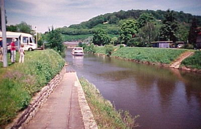
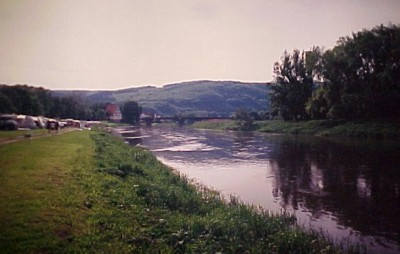
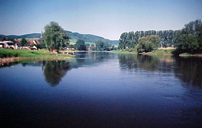
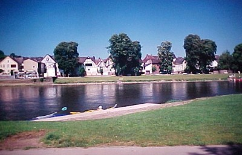
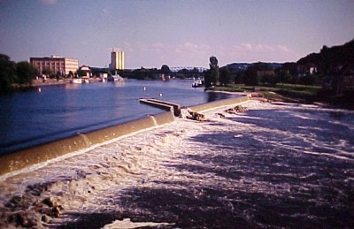

| Home | Kontakt | Steckbrief |
| Wandern/Trekking |
| Klettern/Klettersteige |
| Kanu |
| Fahrradtouren |
| Rucksack-Reisen |
| Touren mit Kindern |
| Wissenswertes |
| Werbung |
Paddeln auf der WeserDie Weser entsteht durch das Zusammenfließen von Werra und Fulda in Hannoversch Münden. Anscheinend konnte man sich wohl nicht einigen ob der Fluß danach Werra oder Fulda heißen sollte und entschied sich unparteiisch für Weser.Wir wollen die Weser am langen Wochenende nach Frohnleichnam 2005 so weit wie möglich hinunterpaddeln. Verkehrstechnisch günstig, d.h. mit einem Bahnhof versehen, schwebt uns Hameln als Endpunkt vor. Das sind allerdings 135 Flußkilometer und die wollen wir von Donnerstag bis Samstag in zweieinhalb Tagen hinter uns bringen. Der Sonntag ist dann der Bahnrückreise nach Münden, der Bootsabholung in Hameln und der Heimfahrt vorbehalten. 135km in zweieinhalb Tagen. Wir hoffen, daß die Strömung uns tatsächlich so helfen wird, wie in allen Kanuführern beschrieben. Der Rekord beim 2005er Wesermarathon lag bei 9 Stunden für die Gesamtstrecke allerdings mit einem Dreier-Ruderboot. Reizvoll an dieser Etappe ist, daß man nicht ein einziges Wehr umtragen oder eine Bootsrutsche benutzen muß. Die Weser hat auf dieser Strecke keine einziges Hindernis. Donnerstag 26.05.05: (28 Flußkilometer) Ich fahre mit dem Faltboot und Ausrüstung per Zug nach Rheda-Wiedenbrück, wo wir Elmar's Kajak auf sein Autodach laden und nach Hannoversch Münden fahren. Dort bauen wir an einem Campingplatz direkt hinter der Schleuse die Boote auf und beladen sie.  Einsatzstelle an der Schleuse in Hanoversch Münden Elmar bringt sein Auto noch schnell zum Park and Ride Platz am Bahnhof und um 14 Uhr paddeln wir endlich los. Wir sind sehr erstaunt, wie schnell wir dank der Stömung voran kommen. Die Weser macht so ca. 4 bis 6 km/h, so dass wir uns mit durchschnittlich 10 km/h stromabwärts bewegen. Entlang des Flusses gibt es reichlich Campingplätze, die direkt am Ufer liegen. Wir entscheiden uns in Gieselwerder bei Flußkilometer 28 unser Zelt aufzubauen.  Campingplatz Gieselwerder - Direkt an der Weser Nach einer Dusche, einem Teller Spaghetti und einer Stadtbesichtigung fallen wir in den Schlaf. Freitag 27.05.05: (61 Flußkilometer) Gegen halb elf sitzen wir schon wieder in den Booten. Die heutige Etappe führt uns vorbei an den Städten Bad Karlshafen, Beverungen, Höxter und Holzminden. Bei Flußkilometer 89 laufen wir in Heinsen den dortigen Campingplatz an.  Die Weser bei Heinsen Ein sehr netter Platz. Keine Duschmarken und ein kleiner Pool ergänzen das Angebot. Ein frischgezapftes Pils darf man von der Kneipe mit ans Zelt nehmen. Nach 61 Flußkilometern haben wir es uns auch mehr als verdient. Nach Tortellini mit mächtiger Käse-Sahne Sauce wartet das Zelt auf uns. Samstag 28.05.05: (45 Flußkilometer) Wieder haben wir es geschafft um halb elf in den Booten zu sitzen. Auch heute brennt die Sonne vom wolkenlosen Himmel. Wir fahren an Polle vorbei und bei Flußkilometer 111 ist die nächste gröere Stadt mit Bodenwerder erreicht. Dort machen wir nach der Brücke am rechten Ufer am Anleger des RV Bodenwerder fest. Besser, da stadtnäher wäre aber der neue Anleger am linken Ufer nahe des Parkplatzes gewesen. Den haben wir aber erst später gefunden, weil er nicht in der Karte verzeichnet war. Wir gehen über die Brücke nach Bodenwerder und genehmigen uns ein zweites Frühstück bei einem Bäcker.  Pause in Bodenwerder Auf unserem weitern Weg flußabwärts geht es hinter Grohnde an einem laufenden Atomkraftwerk vorbei. Schon ein komisches Gefühl. Ausgerechnet dort sitzen vier Fischreiher an einer Stelle. Anscheinend gibt es besonders große Fische dort. Kurz danach erreichen wir Hameln und wir landen beim KC Hameln bei Flußkilometer 134,5 an. Nachdem wir die Übernachtung auf der Zeltwiese klargemacht haben, schauen wir uns die Stadt an und holen Informationen über die Zugverbindungen nach Hannoversch Münden ein.  Das Wehr in Hameln. Rechts neben den Silos liegt die Zeltwiese. Abends gibt es dann ein mehrgängiges Menü im Kanuheim und wir schauen zusammen mit anderen Kanuten und potentiellen Bundestrainern das DFB Pokalfinalspiel Schalke 04 gegen Bayern München an. Leider verlor Schalke trotz Schiedsrichterhilfe mit 2:1. Sonntag 29.05.05: (Rückreise) Heute ist für uns ein reiner Fahrtag. Zuerst geht es mit der Eisenbahn von Hameln über Göttingen nach Hannoversch Münden. Dort steigen wir ins Auto und fahren wieder zurück nach Hameln. Nach Abbau und verladen der Boote fahren wir zurück nach Rheda-Wiedenbrück wo ich kurz nach 17 Uhr einen umstiegsfreien Zug nach Duisburg erwische. Informationen: Die Weser ist gefahrlos zu befahren. Aufpassen sollte man bei den zahlreichen motorlosen nur durch die Strömung betriebenen Drahtseilfähren. Nicht vor der fahrenden Fähre herfahren. Aber das gebietet eigentlich auch der gute Menschenverstand. An einigen Stellen gibt es Aalreusen, die man umfahren sollte und auf einigen Abschnitten ist Wasserski erlaubt. Die größten Schiffe sind Ausflugsschiffe, die aber sehr wenig Wellengang erzeugen. Wesentlich mehr Wellen gibt es bei den Sportbooten. Oft werden solche Verdränger auch noch von Laien gesteuert, die wohl verlernt haben, dass man bei Begegnung von Kanuten vom Gas zu gehen hat. Eben diese wundern sich aber, dass man nicht freundlich zurückwinkt, weil man alle Hände voll zu tun hat über Wasser zu bleiben. Startpunkt Hannoversch Münden Campingplatz in Gieselwerder Campingplatz in Heinsen (nur für IE) Münchhausenstadt Bodenwerder Kanu Club Hameln. Ausrichter des Wesermarathons |